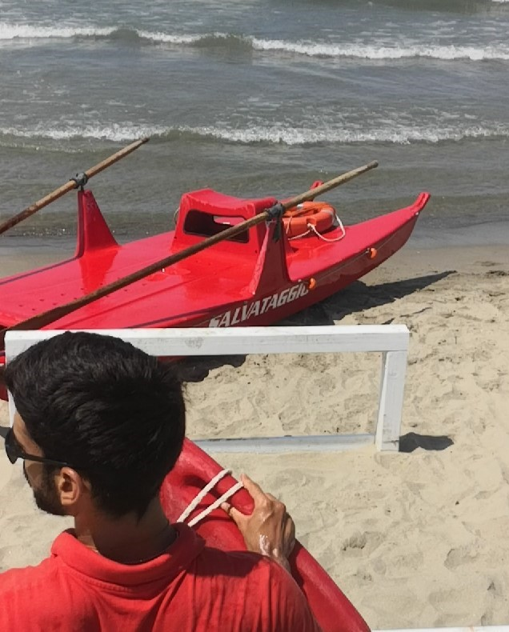

Slow & Steady Wins The Race !
Ok life can be a rush, agreed! I will not lie to you and tell you I have achieved what I have by taking
it slow and chilling. Yet it is better to start things slow and improve gradually, so that we can keep a steady rhythm and
do not lose our work-flow. Definitely, it is better to have a slower and constant flow, rather than rushing and having to
leave the game half-way when things get more interesting. In the end we all want to cut the finish line, it is a matter
of consistency and keeping your own pace in the long run.
If You Want Something Done, Do It Yourself
Yes, if you want something done and you want it done properly, why should someone else do it better than you? Despite in some
cases cooperating and delegating are core parts of a successful strategy, I believe it is important to have at
least the ability/knowledge to do things on your own, so you know what the tasks require. In my most tough times I found
myself dealing directly with the issues, it was useless to ask others for help/advice at some points. I knew my way, and made
things work around it, fortunately!
Every Cloud Has A Silver Lining
Not all bad things come to hurt, exactly! even the worst things/events have a brighter side, it depends on the way we
look at things, not the other way around. The world - or to be more precise its perception - can be a reflection
of our own thoughts and emotions. And of course I am not saying that the world cannot be a mean and nasty place: life
is too often not fair at all.. ok. But we are the creators of our own destiny, we can embrace life and shape our future!!
G-O-D Helps Those Who Help Themselves
Ultimately, it is relevant to know on which tasks and life objectives to focus on. If we do not give ourselves the right direction
nobody will: we can have inspiration from outside/above, but it starts with us to take the lead!
Life Is Beautiful.. 

Yes, I know.. this is not a proper way of saying. It sounds more like the title of a nice movie! but is it just a movie?! or is there
a way of living? Many times we get caught in our own dilemmas and rules and we forget to LIVE L-I-F-E to the fullest: I want to end this page with
this conclusion ... I know speaking is easier.. but once we own the concept we just got to make it work! Life is good !! Life is beautiful ...